从苏黎世机场出发（ZRH）
到 St. Anton 约 200 公里
国际旅客可优先飞苏黎世机场。从苏黎世中央火车站直达圣安东约 2.5–3 小时，从苏黎世自驾约 2.5 小时。

我们会在奥地利蒂罗尔的 St. Anton am Arlberg 举办婚礼。场地是一座坐落在山坡上的木质历史别墅，里面有滑雪博物馆和餐厅。
Rudi-Matt-Weg 10, 6580 St. Anton am Arlberg, 奥地利
到 St. Anton 约 200 公里
国际旅客可优先飞苏黎世机场。从苏黎世中央火车站直达圣安东约 2.5–3 小时，从苏黎世自驾约 2.5 小时。
到 St. Anton 约 100 公里
因斯布鲁克是离圣安东最近的机场，国际航班较少。可从机场前往因斯布鲁克中央火车站，再搭火车到圣安东。
到 St. Anton 约 250 公里
从德国出发，可以从慕尼黑机场自驾，也可以经慕尼黑市区搭火车。两种方式通常都比从苏黎世出发更久。
火车站、优选酒店和婚礼场地彼此步行都在 10 分钟以内。
双人入住 €140／晚，单人入住 €85／晚，公寓 €140–290／套／晚
步行到场地约 9 分钟 · Google 地图 4.9/5（170 条评价） ↗

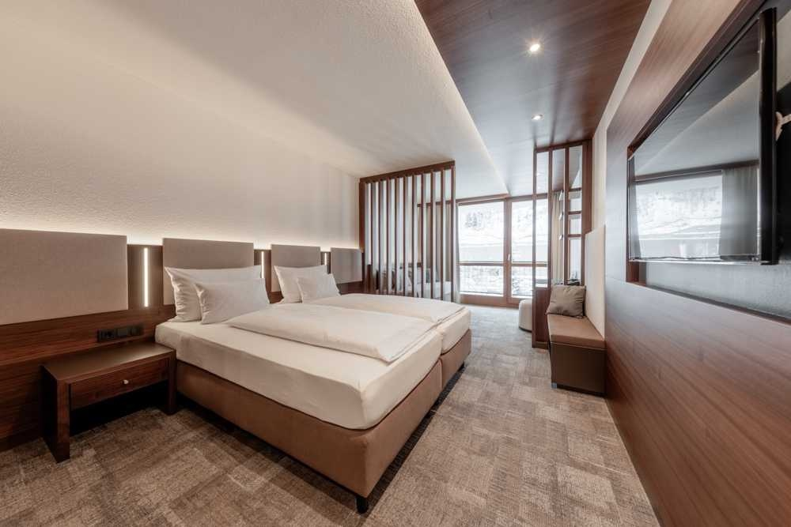
Subject: Wedding accommodation request – YUEYAO – June 2027
Dear Hotel Garni Rundeck team, We're attending the wedding of Mr. Yue Yin and Mr. Siyao Peng on 19th June 2027 at the Museum Restaurant–Café. We'd like to book a stay using the booking code YUEYAO. Name for the booking: [guest's full name] Check-in: [19 June 2027] Check-out: [20 June 2027] Number of adults: [number] Number of children: [number] Preferred room type: [double room, suite or apartment] Please let us know how to confirm our booking. Kind regards, [Your name]
Betreff: Buchungsanfrage zur Hochzeit – YUEYAO – Juni 2027
Liebes Team von Hotel Garni Rundeck, wir sind am 19. Juni 2027 zur Hochzeit von Herrn Yue Yin und Herrn Siyao Peng im Museum Restaurant–Café eingeladen und würden gerne eine Unterkunft mit dem Buchungscode YUEYAO reservieren. Name für die Buchung: [vollständiger Name] Anreise: [19. Juni 2027] Abreise: [20. Juni 2027] Anzahl der Erwachsenen: [Anzahl] Anzahl der Kinder: [Anzahl] Zimmerwunsch: [Doppelzimmer, Suite oder Apartment] Bitte teilen Sie uns mit, wie wir die Buchung bestätigen können. Mit freundlichen Grüßen [Ihr Name]
以下是酒店邮件提供的 2027 年 6 月 18–20 日报价，按整套公寓每晚计价。早餐和住宿税另计。
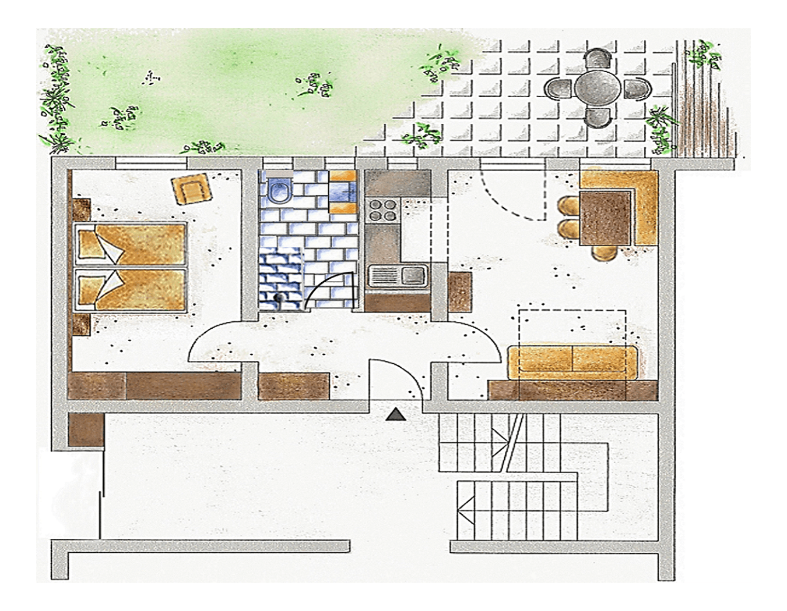
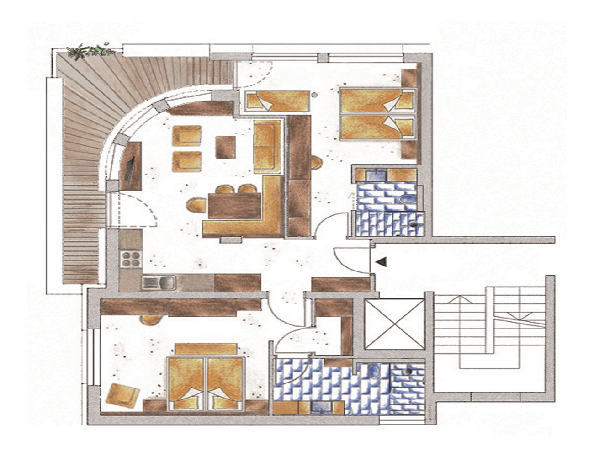


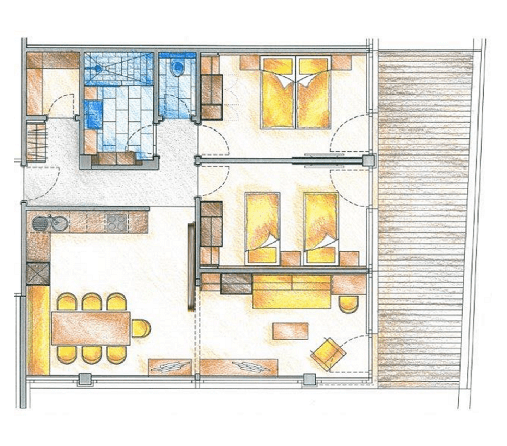
双人房 €150／晚，三人套房 €225／晚
步行到场地约 9 分钟 · Google 地图 4.5/5（58 条评价） ↗


约 €70–100／人／晚，至少住两晚
步行到场地约 9 分钟 · Google 地图 4.9/5（62 条评价） ↗

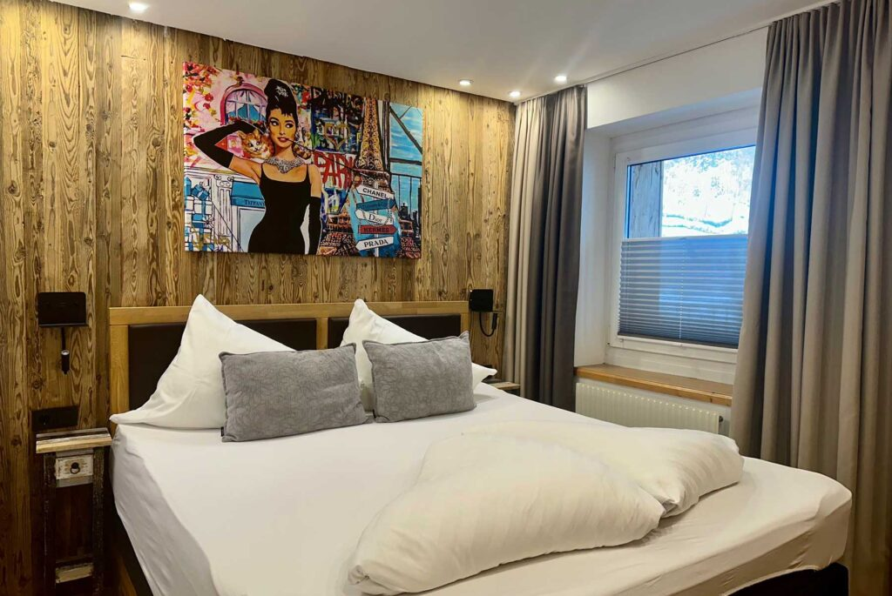
Subject: Apartment booking request – June 2027
Dear ALPtyrol Appartements team, We're attending the wedding of Mr. Yue Yin and Mr. Siyao Peng on 19th June 2027 at the Museum Restaurant–Café. We'd like to book an apartment using the booking code YUEYAO. Name for the booking: [guest's full name] Check-in: [18 June 2027] Check-out: [20 June 2027] Number of adults: [number] Number of children: [number] Preferred apartment: [apartment name or preferred layout] Please let us know how to confirm our booking. Kind regards, [Your name]
Betreff: Buchungsanfrage zur Hochzeit – YUEYAO – Juni 2027
Liebes Team von ALPtyrol Appartements, wir sind am 19. Juni 2027 zur Hochzeit von Herrn Yue Yin und Herrn Siyao Peng im Museum Restaurant–Café eingeladen und würden gerne ein Apartment mit dem Buchungscode YUEYAO reservieren. Name für die Buchung: [vollständiger Name] Anreise: [18. Juni 2027] Abreise: [20. Juni 2027] Anzahl der Erwachsenen: [Anzahl] Anzahl der Kinder: [Anzahl] Apartmentwunsch: [Name oder gewünschte Aufteilung] Bitte teilen Sie uns mit, wie wir die Buchung bestätigen können. Mit freundlichen Grüßen [Ihr Name]
2027 年 6 月 18–20 日。以下是按官网分人数每晚价格计算的整套公寓两晚参考总价，另计住宿税。
这是当天的大致流程，和场地确认后时间可能会略有调整。
一路来到圣安东，终于见面啦！准备好一起玩了吗？
你们都是我们很重要的朋友，我们也想让你们成为朋友。
天气好的话，就请你在山风和草地间，陪我们一起见证这一刻。
倒一杯香槟，接着聊，也趁六月的好阳光拍几张照。
寻常日子尚且离不开美食，何况是我们的婚礼。
也许跳跳舞，也许唱唱歌，也许就天南地北地聊。
谁能拒绝夜里的一块蛋糕呢？给这一天留个甜甜的结尾。
我们一起走过深夜的圣安东，回房前互道晚安。
沿着草地走一走，让山间的小路带你去看看。
如果你会在 St. Anton 多待一会儿，可以自行安排这些活动。出发前请查看开放时间和当天情况。
2022 年 5 月， 我们在慕尼黑奥林匹克塔上一见钟情。 现在回看这张照片，满城春色当然好看， 但我俩当时的皮肤和腰线， 也很值得多看两眼。

2022 年 9 月， 尧第一次去慕尼黑啤酒节。 越也穿上了巴伐利亚传统皮裤， 不过至今也就穿过这么一次。

2022 年 10 月， 国王湖的秋叶正好。 回家没多久， 就添了张双人床。 后来，我们就把纪念日定在了这个十月。

2022 年 11 月， 尧要回美国博士答辩， 我们想着，接下来也许要分开几个月。 临走前， 尧先带越去了自己最爱的巴黎。

2022 年 12 月， 尧告别了美国的博士生活。 和越开启了在中国暴饮暴食的热恋之旅。 福建也太好吃了！ 厦门、泉州、漳州，每天吃到扶墙。
2023 年 1 月， 我们在川西毕棚沟第一次一起看雪。 本来订了温泉酒店，想浪漫地跨个年。 结果两个人都高反，泡汤计划就这么泡汤了。

2023 年 4 月， 在科莫湖，我们误以为意大利菜不过如此。 倒是从这趟起，爱上了欧洲的好山好水， 也爱上了开着车去各种漂亮的小镇。
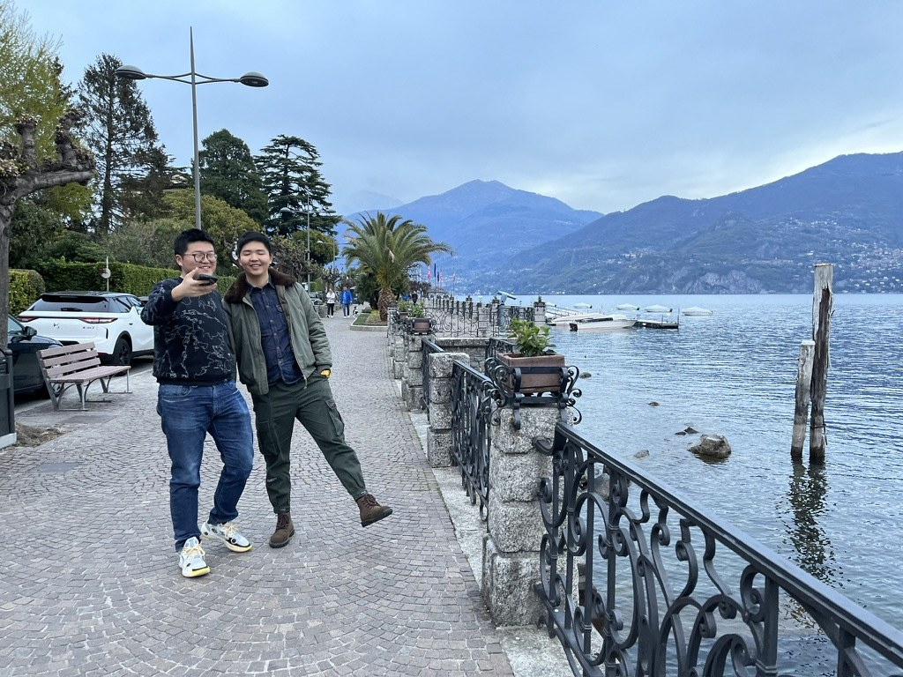
2023 年 5 月， 尧带越去了美国加州。 在旧金山动了领证的念头。 三年四个月后，在丹麦领了证。

2023 年 5 月， 在乔治城大学庆祝尧博士毕业， 并悄悄拍下了这张照片。 美国的博士生涯刚结束， 慕尼黑的幸福日子早就开始了。

2023 年 5 月， 在纽约唱了卡拉 OK， 还从法拉盛打包了烧腊和肉夹馍。 在回德国的经济舱里， 吃了至今最豪华的一顿飞机餐。
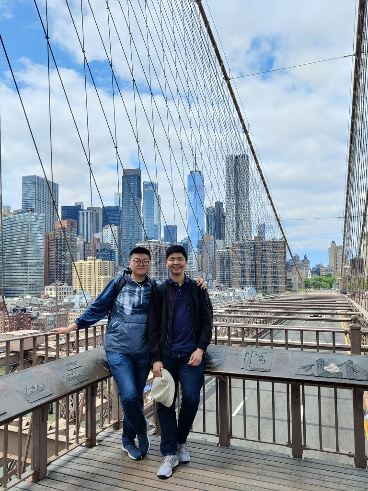
2023 年 8 月， 越带尧见了他在埃尔朗根的朋友。 那也是我俩第一次穿着西装一起参加婚礼。 猜猜看，轮到自己的婚礼，我们还会穿这两套吗？

2023 年 9 月， 我们带美国来的朋友去瑞士，在龙疆湖拍了这张。 比慕尼黑更贵、更干净，也更「山」。 阿尔卑斯的春夏秋冬，哪一季都好看。
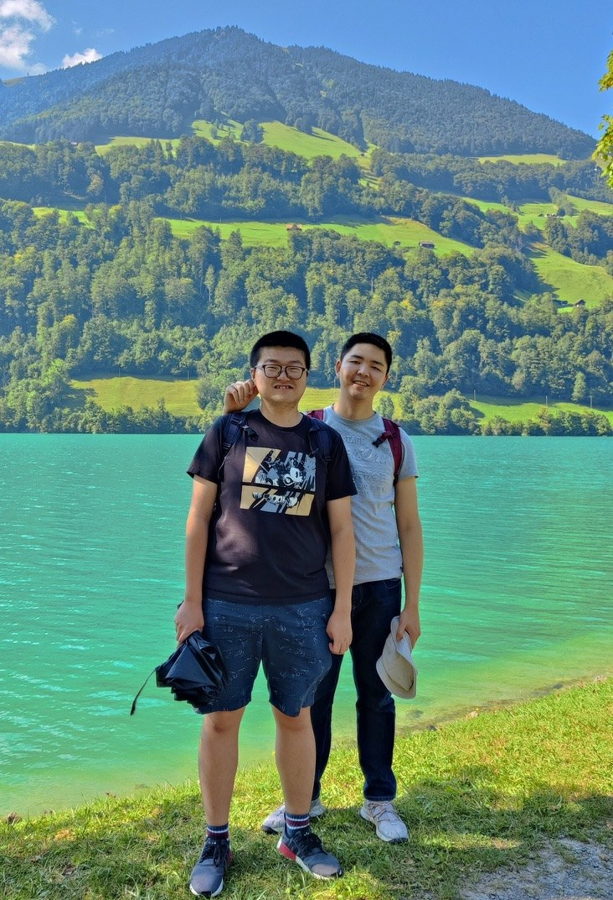
2023 年 12 月， 我们开始一起滑雪啦！ Zillertal、Ötztal、Inntal…… 奥地利的一个个山谷，都留下了我俩比翼双飞的滑痕。

2023 年 12 月， 德国的冬天那么长，十二月总得喝杯热红酒。 慕尼黑那几个圣诞市场年年都逛， 这回也去奥格斯堡凑了个热闹。
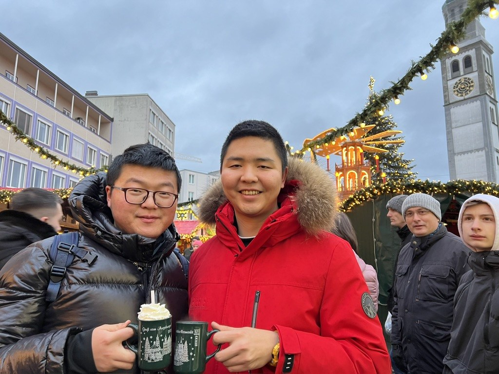
2023 年 12 月， 在龙达，我们没看斗牛，也用不着私奔。 可这座山崖上的小城，真适合谈恋爱。 野味也很好吃。

2024 年 8 月， 在芭提雅，怕水的尧拉着在海边长大的越， 在浅滩拍下了这张甜甜的浮潜照。 那一会儿，我们也住进了热带鱼儿的彩色世界。

2024 年 8 月， 在清迈，一出门就满头大汗， 也挡不住我们踩着拖鞋，一家家小店吃过去。 至于半天的泰菜课，谁能拒绝呢？ 慕尼黑家里还藏着不少泰国干货， 欢迎来尝尧的炒河粉、越的打抛饭。

2024 年 12 月， 蔚蓝海岸除了尼斯，还有低调又讲究的昂蒂布。 圣诞时的海里没人戏水， 岸边却全是打水漂的好石头，简直是越的圣地。 找准那个经典的浪漫机位，按下快门。 远处那一抹白，不就是阿尔卑斯的雪顶吗？

2025 年 3 月， 奥地利的索尔登贵是贵， 可就冲那大落差，我们年年都想来滑。 累了，或者摔了，就坐在雪上看看风景。 歇一歇，凉快一下，再去套一圈。

2025 年 6 月， 摩德纳和托斯卡纳，让我们对意大利菜改了观。 从此，去哪儿吃得开心，就想跟当地人学做几道。 这次学做意大利面。 尧最爱 Tagliatelle，越最爱 Lasagna。
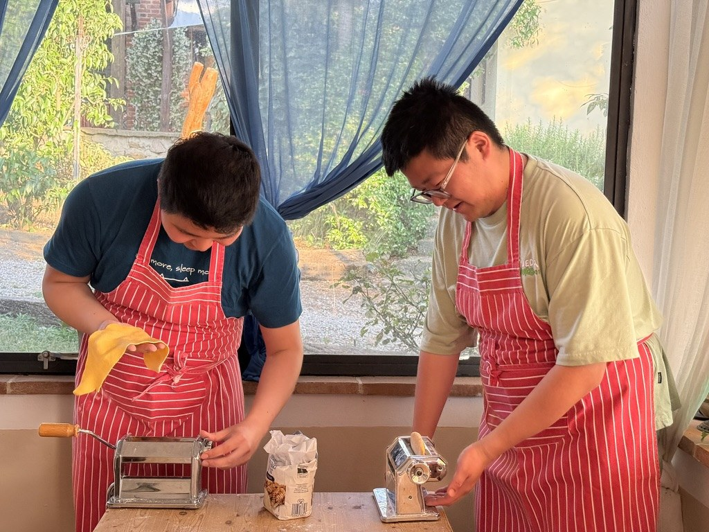
2025 年 6 月， 夏天的日出早得爬不起来， 可晚上九点多的日落，哪有不看的道理？ 托斯卡纳的田野望不到头。 我们就这么慢悠悠地看完了一场假期日落。
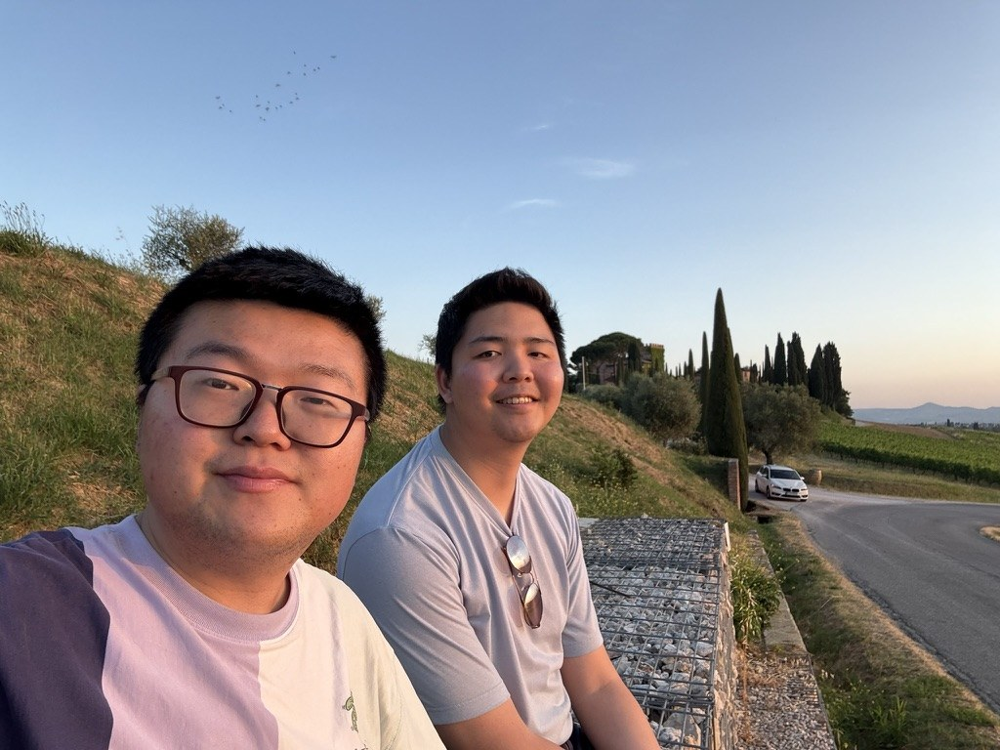
2025 年 12 月， 在 SkiWelt 滑完一天雪，傍晚再坐缆车上山。 逛过那么多圣诞市场，最静的是雪地里的 Ellmau。 灯光微微亮着，只听见脚下的雪嘎吱响，还有我俩的笑声。 也喝到了至今最好喝的热红酒。
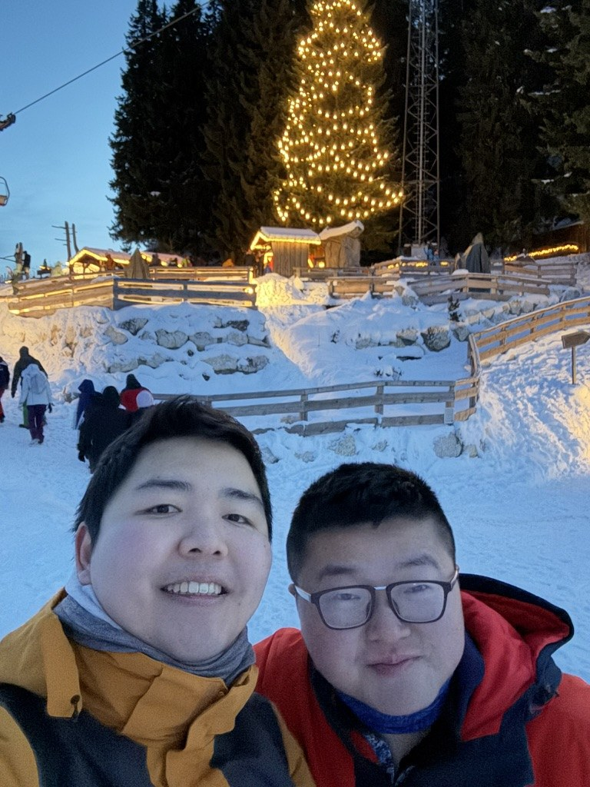
2025 年 12 月， 要说蒂罗尔哪个雪场的缆车最纵横交错， 我俩首推 Mayrhofen。 山上山下都有宽宽的蓝道，够我们尽情练活儿。

2025 年 12 月， 过了边境，斯特拉斯堡的树桩蛋糕好吃得很， 热红酒嘛，我们还是投德国一票。 圣诞到新年，和好友在民宿夜夜打牌， 还在欧洲公园见识了天不怕地不怕的越。

2026 年 2 月， 要是一座教堂没能打动越， 那多半是它还不够壮观。 二月的巴塞罗那，圣家堂里的光也这么明媚。 就像我们每次去西班牙度假的心情。
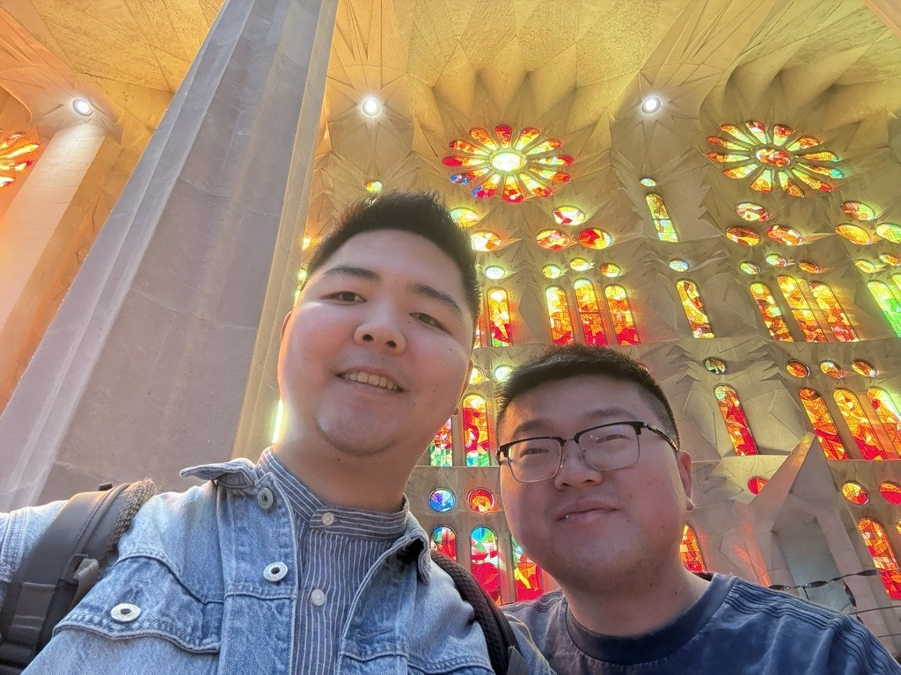
2026 年 2 月， 如果说巴塞罗那是建筑之城， 那瓦伦西亚就是城市公园的殿堂。 租辆单车，或者就凭一双铁腿， 慢慢丈量这座温暖闲适的城市吧。
2026 年 2 月， 差点忘了，瓦伦西亚还有欧洲最大的水族馆。 L’Oceanogràfic。
2026 年 4 月， 我俩平时不太爱凑旅游胜地的热闹。 可要是坐水上出租车去威尼斯的玻璃岛，那就另当别论。 早晚沿着小岛的运河散散步， 主岛嘛，去快闪打个卡就好。

2026 年 8 月， 谢谢广州来的摄影师， 拍下我俩多洛米蒂划船的照片。 Lago di Braies 的木船原始得很， 得有两个帅哥才驾驭得了。

2026 年 8 月， 意大利南蒂罗尔的山峰， 还是比奥地利蒂罗尔的更显峭拔。 回慕尼黑的路上才发现， 我俩早就准备好了，就等对方先提结婚呢。

2026 年 9 月， 我们顺利抢到了丹麦的结婚登记预约， 也很开心，慕尼黑的好友能和我们一起去。 最好的单身派对， 就是和亲友在 Sønderborg 的海边走走，聊聊天。
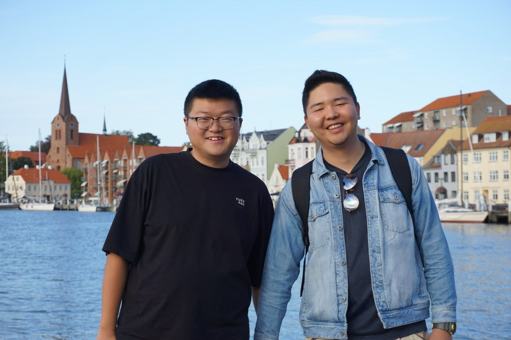
2026 年 9 月， 我俩穿上帅气的西装，在 Aabenraa 小镇慢慢走。 从这天起，我们要做彼此可以依靠的大人， 也要做对方心里的那个小朋友。

2026 年 9 月， 在 Aabenraa， Yes, of course. Yes, I do. 异想天开的尧和脚踏实地的越， 给了彼此一个家。

2026 年 10 月， 我们开始看婚礼场地了。 想请朋友们来看看我们最喜欢的阿尔卑斯， 第一次来也好，来过很多次也好。 山景好看的地方不少， 最后选了个能让老朋友好好叙旧、新朋友慢慢认识的地方。
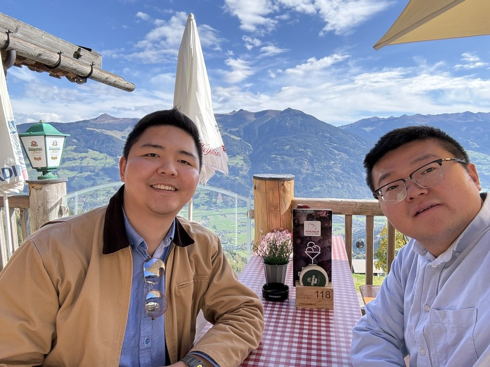
2027 年 6 月 19 日（周六），想请你来奥地利圣安东，在蒂罗尔的青山与草地间，和我们一起过一个初夏的好日子，庆祝我们成为彼此的老公。
行程还没定也没关系，先跟我们说说，你有多大可能来、需不需要住宿。之后想再告诉我们新的打算，用同一个邮箱就好。
可将回执滑杆留在 50%（不确定）。
到场时间和仪式安排确认后，会更新到「婚礼流程」。